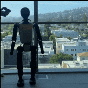
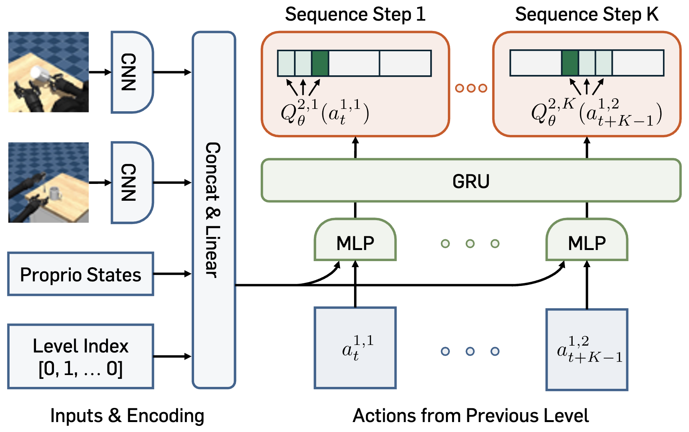
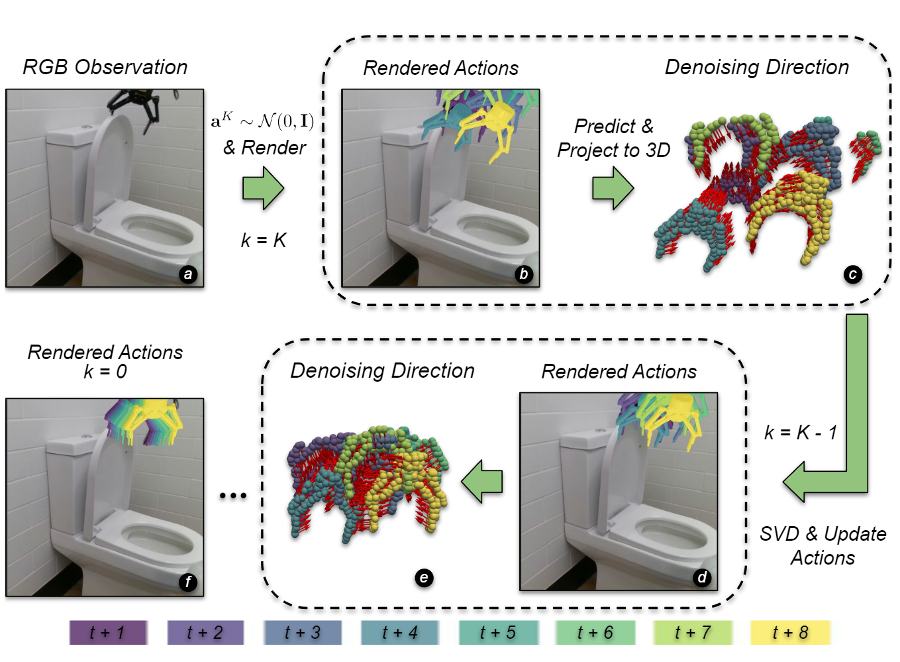

Younggyo Seo
Hi! I am a researcher at Amazon Frontier AI & Robotics (FAR) team, where I work with Pieter Abbeel .
My goal is to develop intelligent robots that achieve super-human performance that go
beyond the level of human-generated behaviors.
To that end, my research focuses on reinforcement learning that enables agents to discover new
behaviors through online experiences.
To further enable such agents to understand the world, my research also focuses on
world models, video generation, and representation learning.
Previously, I was a postdoctoral scholar at UC Berkeley working with Pieter Abbeel and also spent a year as
a research scientist at Dyson Robot Learning Lab working with Stephen James , training robots with reinforcement learning.
Before that, I received my PhD from KAIST advised by Jinwoo Shin .
During my PhD, I was a visiting scholar at UC Berkeley working with Pieter Abbeel and Kimin Lee and interned at
Microsoft Research Asia.
Feel free to send me an e-mail if you want to have a chat!Contact : mail AT younggyo.me
Google Scholar /
Twitter /
Github /
CV (Jul.
2025)
Publications

FastTD3: Simple, Fast, and Capable Reinforcement Learning for Humanoid Control
Younggyo Seo ,
Carmelo Sferrazza ,
Haoran Geng ,
Michal Nauman ,
Zhao-Heng Yin ,
Pieter Abbeel
Technical Report , 2025
Paper / Website
/ Code
We introduce FastTD3, a simple, fast, and capable off-policy RL algorithm for humanoid control.
Robot-R1: Reinforcement Learning for Enhanced Embodied Reasoning in Robotics
Dongyoung Kim ,
Sumin Park,
Huiwon Jang ,
Jinwoo Shin ,
Jaehyung Kim ,
Younggyo Seo ,
Neural Information Processing Systems (NeurIPS ) , 2025.
Paper
We introduce Robot-R1, a novel framework that leverages reinforcement learning to enhance embodied reasoning specifically for robot control.

Coarse-to-fine Q-Network with Action Sequence for Data-Efficient Robot Learning
Younggyo Seo ,
Pieter Abbeel
Neural Information Processing Systems (NeurIPS ) , 2025.
Paper / Website
/ Code
We present Coarse-to-fine Q-Network with Action Sequence (CQN-AS ), a value-based RL
algorithm that trains a critic network to output Q-values over a sequence of actions .
Efficient Long Video Tokenization via Coordinate-based Patch Reconstruction
Huiwon Jang ,
Sihyun Yu ,
Jinwoo Shin ,
Pieter Abbeel ,
Younggyo Seo
Conference on Computer Vision and Pattern Recognition (CVPR ) , 2025.
Paper / Website
/ Code
We introduce CoordTok, a scalable video tokenizer that learns a mapping from coordinate-based
representations to the corresponding patches of input videos.
Continuous Control with Coarse-to-fine Reinforcement Learning
Younggyo Seo ,
Jafar Uruç ,
Stephen James
Conference on Robot Learning (CoRL ) , 2024.
Paper / Website / Code
We present Coarse-to-fine Reinforcement Learning (CRL), which trains RL agents to zoom-into
continuous action space in a coarse-to-fine manner. Within this framework, we present
Coarse-to-fine Q-Network (CQN), a
value-based RL algorithm for continuous control.
BiGym: A Demo-Driven Mobile Bi-Manual Manipulation Benchmark
Nikita Cherniadev* ,
Nicholas Backshall* ,
Xiao Ma* ,
Yunfan Lu ,
Younggyo Seo ,
Stephen James
Conference on Robot Learning (CoRL ) , 2024.
Paper / Website / Code
We present BiGym, a new benchmark and learning environment for mobile bi-manual demo-driven
robotic manipulation. BiGym consists of 40 diverse tasks in home environment, and provides
human-collected
demonstrations.
The Power of the Senses: Generalizable Manipulation from Vision and Touch through
Masked Multimodal Learning
Carmelo Sferrazza ,
Younggyo Seo ,
Hao Liu ,
Youngwoon Lee ,
Pieter Abbeel
IEEE/RSJ International Conference on Intelligent Robots and Systems (IROS ) , 2024.
Paper / Website /
Code
We propose Masked Multimodal Learning (M3L), which jointly learns a policy and visual-tactile
representations based on masked autoencoding.
Visual Representation Learning with Stochastic Frame Prediction
Huiwon Jang ,
Dongyoung Kim ,
Junsu Kim ,
Jinwoo Shin ,
Pieter Abbeel ,
Younggyo Seo
International Conference on Machine Learning (ICML ) , 2024.
Paper / Website
We present RSP, a framework for visual representation learning from videos, that learns
representations that capture temporal information between frames by training a stochastic future
frame prediction model.

Render and Diffuse: Aligning Image and Action Spaces for Diffusion-based Behaviour
Cloning
Vitalis Vosylius ,
Younggyo Seo ,
Jafar Uruç ,
Stephen James ,
Robotics: Science and Systems (RSS ) , 2024.
Paper
/ Website
We introduce Render and Diffuse (R&D), a method that unifies low-level robot actions and RGB
observations within the image space using virtual renders of
the 3D model of the robot.
Accelerating Reinforcement Learning with Value-Conditional State Entropy Exploration
Dongyoung Kim ,
Jinwoo Shin ,
Pieter Abbeel ,
Younggyo Seo
Neural Information Processing Systems (NeurIPS ) , 2023.
Paper
/ Website
/ Code
We introduce a new exploration technique that maximizes value-conditional state entropy, which
takes into account the value estimates of states for computing the intrinsic bonus.
Guide Your Agents with Adaptive Multimodal Rewards
Changyeon Kim ,
Younggyo Seo ,
Hao Liu ,
Lisa Lee ,
Honglak Lee ,
Jinwoo Shin ,
Kimin Lee
Neural Information Processing Systems (NeurIPS ) , 2023.
ICML Workshop on New Frontiers in Learning, Control, and Dynamical Systems , 2023.
Paper
/ Website / Code
We present ARP (Adaptive Return-conditioned Policy), which utilizes an adaptive multimodal
reward signal for behavior learning.
Multi-View Masked World Models for Visual Robotic Manipulation
Younggyo Seo* ,
Junsu Kim* ,
Stephen James ,
Kimin Lee ,
Jinwoo Shin ,
Pieter Abbeel
International Conference on Machine Learning (ICML ) , 2023.
RSS Workshop on Experiment-oriented Locomotion and Manipulation Research , 2023 as
Spotlight presentation .
Paper
/ Website / Code
We introduce MV-MWM that learns multi-view representations via masked view reconstruction and
utilize them for visual robotic
manipulation.
Language Reward Modulation for Pretraining Reinforcement Learning
Ademi Adeniji ,
Amber Xie ,
Carmelo Sferrazza ,
Younggyo Seo ,
Stephen James ,
Pieter Abbeel
Preprint , 2023
Paper
/ Code
We introduce LAMP, a method for pretraining RL agents by using multimodal reward signal from
Video-Langauge models.
Imitating Graph-Based Planning with Goal-Conditioned Policies
Junsu Kim ,
Younggyo Seo ,
Sungsoo Ahn ,
Kyunghwan Son ,
Jinwoo Shin
International Conference on Learning Representations (ICLR ) , 2023.
Paper
/ Code
We introduce PIG, a simple yet effective self-imitation scheme which distills a
subgoal-conditioned policy into the target-goal-conditioned policy.
Masked World Models for Visual Control
Younggyo Seo ,
Danijar Hafner ,
Hao Liu ,
Fangchen Liu ,
Stephen James ,
Kimin Lee ,
Pieter Abbeel
Conference on Robot Learning (CoRL ) , 2022.
Paper
/ Website / Code
We introduce MWM that learns a latent dynamics model on top of an autoencoder trained with
convolutional feature masking and reward prediction.
Dynamics-Augmented Decision Transformer for Offline Dynamics Generalization
Changyeon Kim* ,
Junsu Kim* ,
Younggyo Seo ,
Kimin Lee ,
Honglak Lee ,
Jinwoo Shin
NeurIPS Workshop on Offline Reinforcement Learning , 2022.
Paper
We introduce DADT, which improves dynamics generalization of decision transformer by introducing
a next-state prediction objective.
Reinforcement Learning with Action-Free Pre-Training from Videos
Younggyo Seo ,
Kimin Lee ,
Stephen James ,
Pieter Abbeel
International Conference on Machine Learning (ICML ) , 2022.
Paper / Website / Code
We introduce APV that can leverage diverse videos from different domains for pre-training to
improve sample-efficiency.
HARP: Autoregressive Latent Video Prediction with High-Fidelity Image Generator
Younggyo Seo ,
Kimin Lee ,
Fangchen Liu ,
Stephen James ,
Pieter Abbeel
International Conference on Image Processing (ICIP ) , 2022.
Paper
We introduce a video prediction model that can generate 256x256 frames by training an
autorgressive transformer on top of VQ-GAN.
SURF: Semi-supervised Reward Learning with Data Augmentation for Feedback-efficient
Preference-based Reinforcement Learning
Jongjin Park ,
Younggyo Seo ,
Jinwoo Shin ,
Honglak Lee ,
Pieter Abbeel ,
Kimin Lee
International Conference on Learning Representations (ICLR ) , 2022.
Paper / Code
We introduce semi-supervised learning and temporal data augmentation for improving the
feedback-efficiency of preferenced-based RL.
Object-Aware Regularization for Addressing Causal Confusion in Imitation Learning
Jongjin Park* ,
Younggyo Seo* ,
Chang Liu ,
Li Zhao ,
Tao Qin ,
Jinwoo Shin ,
Tie-Yan Liu
Neural Information Processing Systems (NeurIPS ) , 2021.
Paper / Article
/ Code
We introduce OREO, a regularization technique for behavior cloning from pixels.
Landmark-Guided Subgoal Generation in Hierarchical Reinforcement Learning
Junsu Kim ,
Younggyo Seo ,
Jinwoo Shin
Neural Information Processing Systems (NeurIPS ) , 2021.
Paper
/ Code
We introduce HIGL, a goal-conditioned hierarchical RL method that samples landmarks and utilizes
them for guiding the training of a high-level policy.
Offline-to-Online Reinforcement Learning via Balanced Replay and Pessimistic
Q-Ensemble
Seunghyun Lee* ,
Younggyo Seo* ,
Kimin Lee ,
Pieter Abbeel ,
Jinwoo Shin
Conference on Robot Learning (CoRL ) , 2021.
NeurIPS Workshop on Offline RL , 2020 as Oral presentation .
Paper
/ Code
We introduce an offline-to-online RL algorithm to address the distribution shift that arises
during
the transition between offline RL and online RL.
State Entropy Maximization with Random Encoders for Efficient Exploration
Younggyo Seo* ,
Lili Chen* ,
Jinwoo Shin ,
Honglak Lee ,
Pieter Abbeel ,
Kimin Lee
International Conference on Machine Learning (ICML ) , 2021.
Paper / Website / Code
We introduce RE3, an exploration technique for visual RL that utilizes a k-NN state entropy
estimate in the representation space of a randomly initialized & fixed CNN encoder.
Trajectory-wise Multiple Choice Learning for Dynamics Generalization in Reinforcement
Learning
Younggyo Seo* ,
Kimin Lee* ,
Ignasi Clavera ,
Thanard Kurutach ,
Jinwoo Shin ,
Pieter Abbeel
Neural Information Processing Systems (NeurIPS ) , 2020.
Paper / Website / Code
We introduce T-MCL that learns multi-headed dynamics model whose each prediction head is
specialized in certain environments with similar dynamics, i.e., clustering environments.
Context-aware Dynamics Model for Generalization in Model-Based Reinforcement Learning
Kimin Lee* ,
Younggyo Seo* ,
Seunghyun Lee ,
Honglak Lee ,
Jinwoo Shin
International Conference on Machine Learning (ICML ) , 2020.
Paper / Website / Code
We introduce CaDM that learns a context encoder to extract contextual information from
recent history with self-supervised losses of future and backward prediction.
Learning What to Defer for Maximum Independent Sets
Sungsoo Ahn ,
Younggyo Seo ,
Jinwoo Shin
International Conference on Machine Learning (ICML ) , 2020.
Paper / Code
We introduce LwD, a deep RL framework for the maximum independent set problem.
Experience
Applied Scientist | Amazon Frontier AI and Robotics team (working with Pieter
Abbeel )
Postdoctoral Scholar | UC Berkeley Berkeley Robot Learning Lab (working with Pieter
Abbeel )
Research Scientist | Dyson Robot Learning Lab Dyson Robot Learning Lab (working with Stephen James )
Visiting Scholar | UC Berkeley Berkeley Robot Learning Lab (working with Pieter
Abbeel and Kimin Lee )
Research Intern | Microsoft Research Asia Deep and Reinforcement
Learning Group (working with Chang Liu , Li Zhao , and Tao Qin )
Education
Ph.D in Artificial Intelligence | KAIST
B.A in Economics | Seoul National University
Summa Cum Laude
Leave of absence for military service: Feb 2014 - Feb 2016
Academic Activities
Area Chair & Reviewer
Area Chair: NeurIPS
Conference Reviewer: ICLR, ICML, NeurIPS, CoRL, CVPR, AAAI, IROS, RSS
Journal Reviewer: TMLR, IEEE RA-L
Workshop Organizer
Honors & Awards
Top Reviewer Award (top 10%), ICML 2021, 2022
AI/CS/EE Rising Stars Award, Google Explore Computer Science Research, 2022
Best Paper Award, Korean Artificial Intelligence Association, 2021
Summa Cum Laude, Economics department, Seoul National University, 2019
National Humanities Scholarship, Korea Student Aid Foundation, 2012-2018
1st Rank @ College Scholastic Ability Test with perfect score (500/500), Korea, 2011


{kind=link}